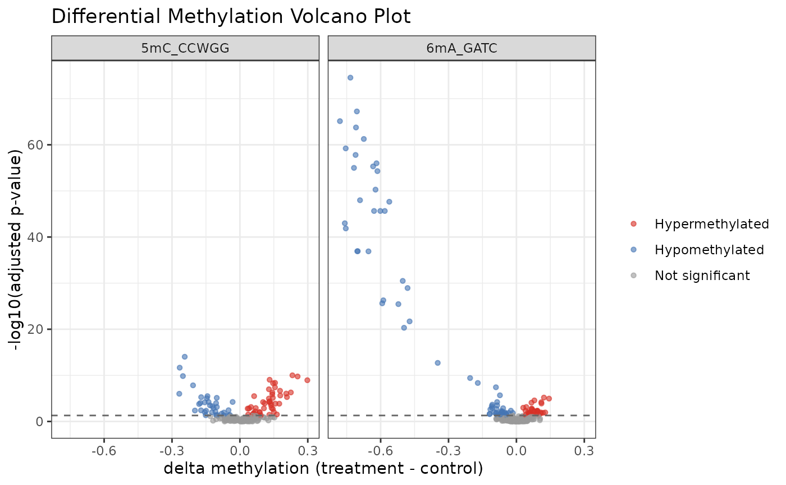
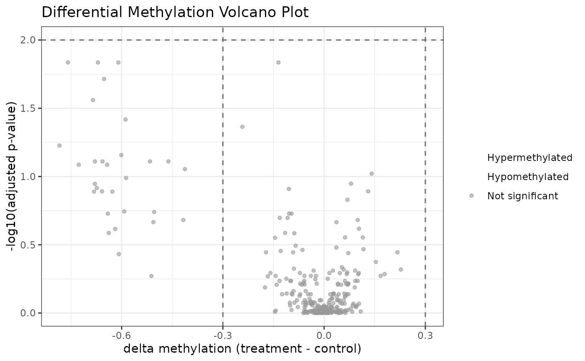

Produces a volcano plot from differential methylation results computed by
diffMethyl() and extracted with results().
Sites are colored by significance category based on user-supplied adjusted
p-value and delta-beta thresholds.
Arguments
- results
A
data.framereturned byresults(), containing at minimum the columnsdm_delta_beta(numeric, effect size as beta difference treatment minus control) anddm_padj(numeric, BH-adjusted p-value in \([0, 1]\)).- delta_beta_threshold
Numeric scalar in (0, 1). Sites with
|dm_delta_beta| >= delta_beta_thresholdANDdm_padj <= padj_thresholdare considered significant. Default0.2.- padj_threshold
Numeric scalar in (0, 1). Adjusted p-value cutoff for significance. Default
0.05.
Value
A ggplot object. The x-axis shows
dm_delta_beta (effect size), the y-axis shows
-log10(dm_padj) (significance). Sites are colored as
"Hypermethylated" (positive delta-beta, significant),
"Hypomethylated" (negative delta-beta, significant), or
"Not significant". Dashed lines mark the threshold boundaries.
Sites with NA adjusted p-value are excluded from the plot.
Examples
data(comma_example_data)
cd_dm <- diffMethyl(comma_example_data, ~ condition)
#> diffMethyl: testing 'condition' -- 'treatment' vs 'control' (reference)
#> methylKit: comparing 'treatment' (treatment) vs 'control' (reference/control)
#> uniting...
#> methylKit: comparing 'treatment' (treatment) vs 'control' (reference/control)
#> uniting...
res <- results(cd_dm)
plot_volcano(res)

# Custom thresholds
plot_volcano(res, delta_beta_threshold = 0.3, padj_threshold = 0.01)
